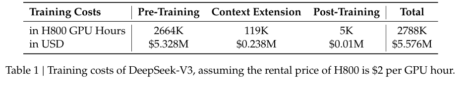
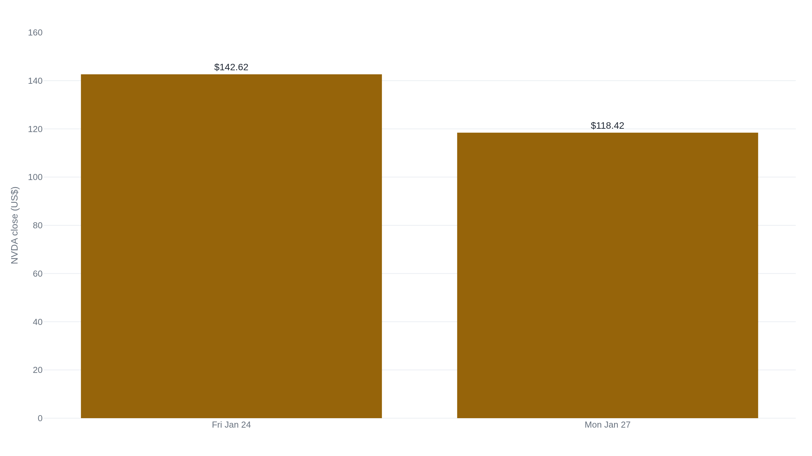

Nvidia lost $589 billion in a day, more than 100,000 times DeepSeek's training bill
DeepSeek's report priced one training run at $5.576 million, and investors who read that as the whole model's cost helped trigger the sell-off on 27 January 2025.
Why this matters
Every frontier-model announcement now comes with a price tag, and the price tag becomes the headline before anyone reads how it was built. In January 2025, a $5.576 million figure from one technical report sat inside the largest single-day loss of market value any company has ever recorded, in a week when a lot of people read that figure as something it wasn't. This lesson takes the figure apart: what its two inputs actually are, what DeepSeek's own report says it leaves out, what outside estimates add on top of that, and what it cost when nobody stopped to check.
- 01
- DeepSeek-V3 lists 671 billion parameters and runs 37 billion per token: how this model's declared size is itself a constructed figure.
- 02
- DeepSeek trained a model to reason without ever showing it a worked example: R1's own training run, and its own separate, smaller cost.
- 03
- GPT-4 sits above the EU's systemic-risk line on a number OpenAI never disclosed: the other frontier number, training compute in FLOPs, estimated the same way.
DeepSeek's technical report starts with a number
DeepSeek-AI published the technical report for DeepSeek-V3 on 27 December 2024. The model has 671 billion total parameters and activates 37 billion of them for each token, a size this course already worked through. One line in the report's introduction would end up mattering more than any of its benchmark scores. DeepSeek measures a training run the way a factory measures a shift: in GPU-hours, one GPU running for one hour. The full run took 2.788 million of them, the report says, and at an assumed rental price of $2 per GPU-hour, that totals $5.576 million.1
That figure belongs to V3, not to R1, the reasoning model DeepSeek released weeks later with its own, separate training run. A September 2025 round of coverage even attached a different number, about $294,000, to R1's post-training run alone: distinct from, and much smaller than, V3's $5.576 million training total.2
Read as an invoice, $5.576 million looks like DeepSeek's whole budget for building a frontier model. Read as what the report actually says, it is an estimate scoped to one run, built from two choices: how many hours that run took, and what an hour of that hardware was assumed to cost.
A measured count times an assumed price
Training a model this size runs thousands of GPUs at once for weeks. DeepSeek's Table 1 splits that time into three stages.1 Pre-training, the stage where the model reads its way through 14.8 trillion tokens, took 2,664,000 GPU-hours and cost $5.328 million at the assumed rate. Extending its context window took another 119,000 hours, or $238,000. Post-training took 5,000 hours, or $10,000. Add the three and the total is 2,788,000 GPU-hours. Multiply by $2 and the result is the number everyone quoted: $5.576 million.1

The report gives the rate behind the largest of those stages: on a cluster of 2,048 H800 GPUs, DeepSeek trained on each trillion tokens in about 180,000 GPU-hours, or 3.7 days.1 That's the same kind of number this course used to compare Groq's and Anyscale's hardware speed, just counted in hours of compute bought rather than tokens produced per second.
Neither number in that multiplication is a receipt. The hour count is measured, for one run, on DeepSeek's own cluster. The $2-an-hour price is not a bill DeepSeek paid; it is an assumption, stated in the same sentence as the total, about what an hour of that hardware costs to rent.1 Change either input and the total changes with it.
The caveat says less than it's credited for
A training-cost figure like this one exists so an outsider can compare what it costs different labs to reach similar capability, without access to anyone's internal budget. DeepSeek's number does something most such claims don't: it shows its own arithmetic, in a public report, down to the assumed hourly price.
The report's own caveat says what that number does not cover: "the aforementioned costs include only the official training of DeepSeek-V3, excluding the costs associated with prior research and ablation experiments on architectures, algorithms, or data."1 That's the whole exclusion. It does not mention salaries, hardware bought and never used successfully, or the cost of acquiring the training data, however often coverage described the gap that way. What DeepSeek says is missing is prior research and architecture experiments. Nothing else.
The bigger, all-in estimate comes from outside the report. SemiAnalysis, a semiconductor research firm, estimated that DeepSeek's parent company has access to roughly 50,000 Hopper-generation GPUs: about 10,000 H800s, 10,000 H100s, and a mix of H20s. It put the company's total server capital expenditure at about $1.6 billion, with hardware spending over its history "well higher than $500 million."3 By its own account, the $5.6 million figure "is attributed to just the GPU cost of the pre-training run, which is only a portion of the total cost of the model."3 Bernstein analyst Stacy Rasgon made the same point more bluntly the week the number went viral: DeepSeek did not "build OpenAI for $5M."4
Both SemiAnalysis and Rasgon were drawing that line in the same week the $5.576 million figure reached the widest audience it would ever have, the week Nvidia's stock recorded its steepest single-day loss on record.
A $589 billion trading session
On Monday 27 January 2025, Nvidia's stock fell nearly 17 percent, from $142.62 the previous Friday to $118.42, a drop of $24.20 a share.56 The fall erased about $589 billion in market value in a single session, more than double the $279 billion Nvidia itself had lost on its previous worst day, under five months earlier. Bloomberg, CNBC, and Forbes all reported it as the largest one-day loss of market value any company had recorded.789

Coverage that week tied the drop directly to DeepSeek's own number. Yahoo Finance reported that the decline came as DeepSeek's claim that one of its models cost just $5.6 million to train raised new doubts about how much computing power the industry actually needed.10 That reading is real: investors who took $5.576 million as the cost of building a frontier model had a plain reason to ask why anyone still needed Nvidia's most expensive chips.
No source ties the loss to that reading alone. Bernstein's Rasgon called the panic "overblown" the same day. Talk of a "death-knell of the AI infrastructure complex as we know it," he said, went too far, even as he credited DeepSeek's models as ones that "look fantastic," short of being "miracles."4 The number moved a market that was already reacting to a genuinely capable model shipping from a lab most investors hadn't been pricing in. How much of the $589 billion the misreading caused on its own, no source separates out, and none claims it was all of it.
The takeaway
DeepSeek's $5.576 million never claimed to be the cost of building DeepSeek-V3. It is 2.788 million GPU-hours, DeepSeek's own measured total for one training run, multiplied by $2, an assumed rental price the report states as exactly that: an assumption. What DeepSeek's own caveat excludes is prior research and architecture experiments, nothing about salaries or data acquisition, whatever outside estimates like SemiAnalysis's added on top later. And the $589 billion Nvidia lost the week the number spread wasn't proof the figure was dishonest, or proof it was harmless. It was proof that a market which let one line from a technical report stand in for a whole company's spending was going to be surprised by something, sooner or later. The next time a lab attaches a dollar figure to training a model, ask the question DeepSeek's own report already answers for itself. How many hours were counted. What price was assumed for them. Which part of the process they covered.
- 01
- DeepSeek-V3 Technical Report: the full paper this lesson draws its numbers from, including the architecture and evaluations the cost figure sits beside.
- 02
- SemiAnalysis, "DeepSeek Debates": the fuller teardown of DeepSeek's hardware and spending behind the estimates this lesson cites.
Sources
- arXiv · DeepSeek-V3 Technical Report
- The Register · DeepSeek's AI training cost revisited
- SemiAnalysis · DeepSeek Debates
- CNBC · The DeepSeek sell-off: what major analysts are saying
- StockAnalysis.com · NVDA price history
- StatMuse · Nvidia stock price in January 2025
- Bloomberg · Nvidia's $589 Billion DeepSeek Plunge Is Largest in Market History
- CNBC · Nvidia sheds almost $600 billion in market cap, biggest one-day loss in U.S. history
- Forbes · Biggest market loss in history: Nvidia stock sheds nearly $600 billion as DeepSeek shakes AI darling
- Yahoo Finance · Nvidia stock plummets, loses record $589 billion as DeepSeek prompts questions over AI spending